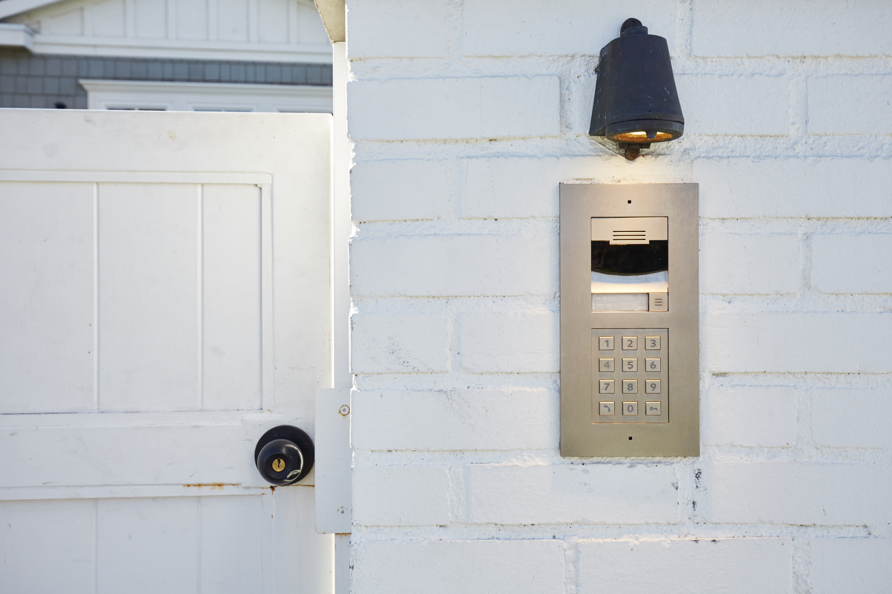

Home Security Integration:
When the doorbell rings, "Who Can It Be Now" plays, cameras focus on the front door, and outdoor lights
adjust.
If the door is left open or the gate is ajar, receive alerts and view surveillance footage remotely.
In case of a breach, trigger an immediate response: lights brighten, doors lock, shades open, and
surveillance footage displays on all TVs.
Convenience and Automation:
Pause TV and display surveillance footage when the doorbell rings.
Provide temporary access codes for guests and personalized codes for family members.
Automatically close the garage door after a set time, and use motion sensors for added safety.
Activate cameras, lights, and alerts when motion is detected in the driveway.
Energy Efficiency and Convenience:
Automatically adjust garage and indoor lighting based on natural light levels and activity.
Dim lights and secure doors when the garage is inactive, optimizing energy usage and security.
Geofencing for Security:
Implement geofencing technology to enhance security when you leave or return home.
Automatically arm the security system and activate surveillance cameras when you leave the designated
geofenced area.
Disarm the system and adjust lighting upon your return, providing a seamless transition between security
modes.
Panic Button Integration:
Install panic buttons in strategic locations throughout the house.
When activated, trigger immediate alerts to emergency contacts and local authorities.
Integrate panic button functionality with other security measures, such as activating lights and
sounding alarms to deter intruders.
Secure Communication Channels:
Ensure all communication channels within the smart home system are encrypted and secure.
Implement multi-factor authentication for accessing security settings and sensitive information.
Regularly update firmware and security protocols to safeguard against emerging threats and
vulnerabilities.
By integrating these features, you'll create a smart, secure,
and convenient home environment that responds intelligently to your needs while enhancing safety and
energy efficiency.
Back To Home...